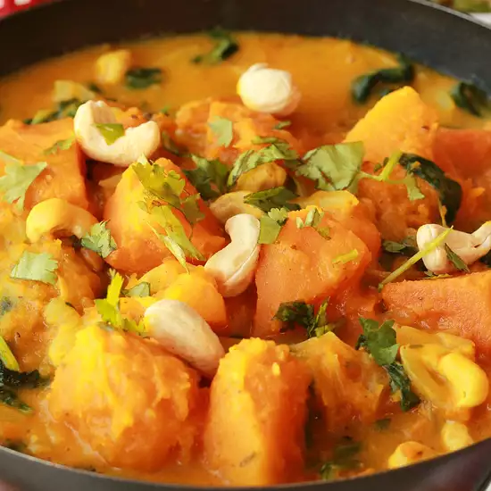

Easy Indian-Style Pumpkin Curry

This is a popular dish in Kerala, South India. It's made during the festivals and is an extremely nutritious and tasty preparation rich in antioxidants and vitamins. What's vital to the dish, however, is the process of frying the coconut in the end to season the dish. This imparts a unique flavor and aroma to this curry.
Ingredients
- 5 cups cubed fresh pumpkin
- 2 cups water, or as needed
- 1 teaspoon ground turmeric
- salt to taste
- ½ cup grated coconut
- 3 dried red chile peppers
- 1 green chile pepper
- 2 tablespoons water, or as needed
- 1 teaspoon cumin seeds
- 1 tablespoon coconut oil, divided
- 2 dried red chile peppers
- 1 teaspoon mustard seeds
- 1 teaspoon skinned split black lentils (urad dal)
- 1 tablespoon grated coconut
- 6 fresh curry leaves, or more to taste
Directions
- Put pumpkin into a large pot. Pour 2 cups water over the pumpkin so the cubes are floating. Season pumpkin and water with turmeric and salt. Bring the mixture to a boil and cook until the pumpkin is tender yet firm enough to retain shape, about 15 minutes.
- Grind 1/2 cup coconut, 3 red chile peppers, green chile pepper, 2 tablespoons water, and cumin seeds in a food processor until you have a paste; stir into the pumpkin mixture and bring again to a boil. Cook until the liquid has thickened and coats the pumpkin cubes, 5 to 7 minutes. Pour the curry into a large serving bowl.
- Heat 2 teaspoons coconut oil in a small skillet over medium-high heat. Cook 2 dried red chile peppers, mustard seeds, and black lentils in hot oil until they sputter, 2 to 3 minutes; pour over curry.
- Heat remaining teaspoon coconut oil in the skillet. Fry 1 tablespoon coconut in the hot oil until completely browned, 3 to 5 minutes. Pour atop the curry. Garnish dish with curry leaves.
Nutrition Facts
Per Serving: 176 calories; protein 3.5g; carbohydrates 16g; fat 12.6g; sodium 51.8mg. Full Nutrition
Home